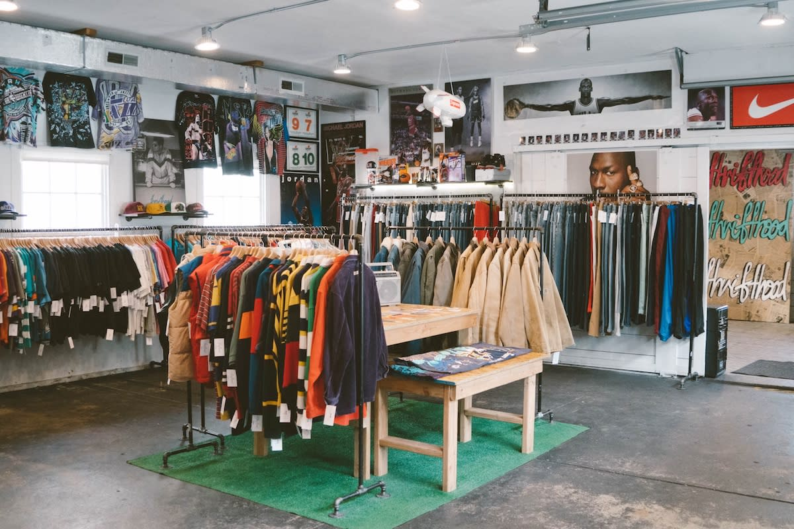

About Us
THRIFT TRIP is your go-to local ukay-ukay shop for curated pre-loved clothing and streetwear. We handpick every item from fresh bales to ensure you get authentic and stylish pieces without spending a fortune. Whether you are hunting for vintage jackets or everyday basics, our store gives every outfit a sustainable second life.
Our Products
- Vintage Graphic Tees and Oversized Shirts
- Branded Denim Jackets and Windbreakers
- Cargo Pants and Mom Jeans
- Pre-loved Sneakers and Canvas Bags
- Weekly New Arrival Bundles (Bagong Bukas na Bulto)
Why Choose Us
Handpicked Quality
Every piece on our racks is carefully inspected, steamed, and sanitized so you only get clean, wearable, and class-A thrift finds.
Affordable Prices
Upgrade your wardrobe starting at just ₱50, with special bundle deals and weekend markdowns for students and resellers.